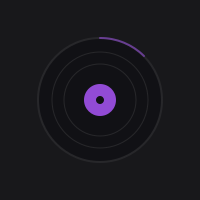

FICHE — / —
MODIFIABLE

001EN ÉCOUTE
Bibliothèque locale · atelier de classement
Écoute, vérifie l’artiste, le style et la langue chantée, puis enregistre. Chaque validation corrige uniquement la fiche locale de ce morceau.
Aucune donnée ne part vers un service externe. Les corrections restent dans Songless.

001EN ÉCOUTE